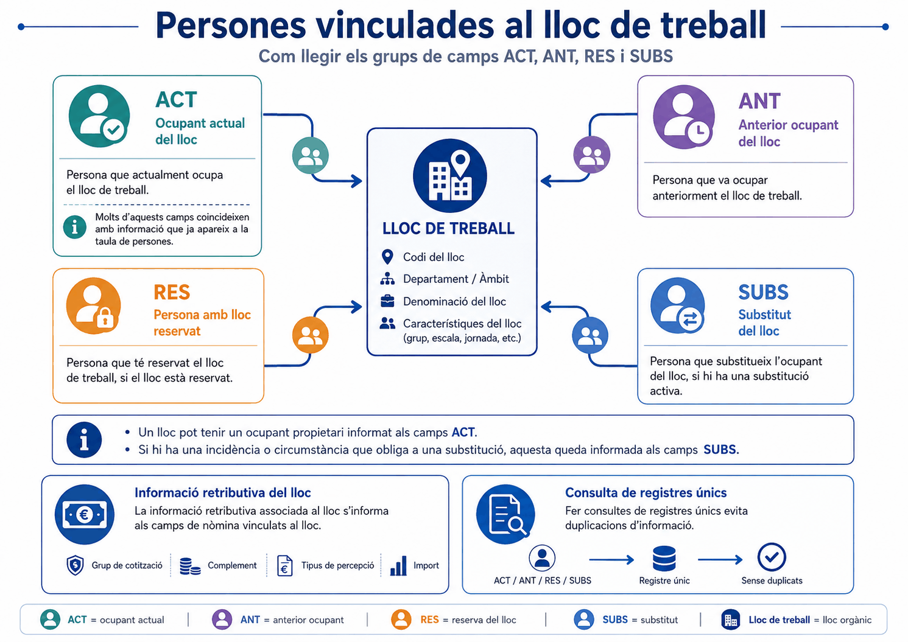
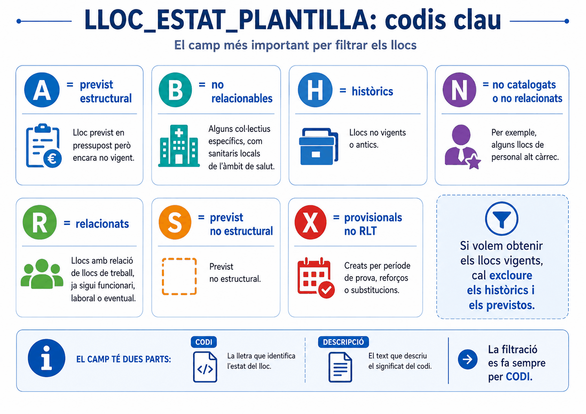
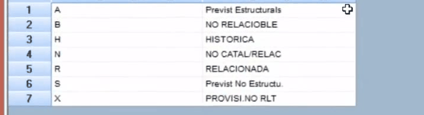
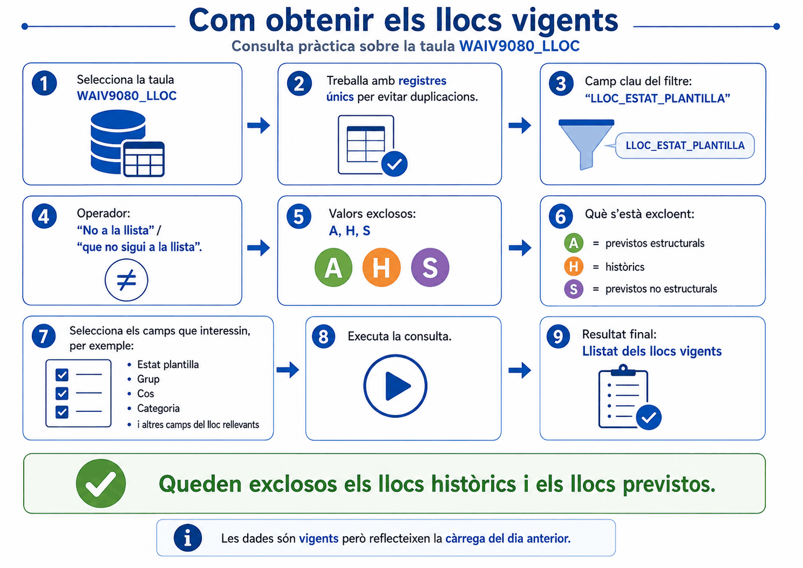

Apartat 1Què conté la taula
Serveix per obtenir informació sobre els llocs de treball d'un departament, organisme o unitat orgànica. És, com la de persones, una taula de registre únic: una fila per lloc.
- Contingut
- Llocs vigents, històrics i previstos a data actual. Inclou tota mena de llocs: relacionats, no relacionats, provisionals i altres.
- Clau
LLOC_CODI, identificador únic de cada lloc.- Vigència
- Dades actuals, vigents el dia anterior.
- Càrrega
- Diària.
- Dades
- Del lloc mateix, de l'ocupant actual, de l'anterior, de la reserva, de l'oferta i del pressupost.
- Abast
- Tots els llocs, els del departament o els de la unitat orgànica, segons el perfil.
Apartat 2El que no hi trobareu
Mostra les dades a data actual i no guarda cap historial de com era un lloc en el passat. Si el lloc 12345 tenia nivell 22 l'any passat i ara en té 24, aquí només hi veureu el 24. El 22 ha desaparegut.
És la conseqüència directa de la segona pregunta de la unitat 00: aquesta és una taula de fotografia, no de pel·lícula. Per a qualsevol pregunta que comenci amb "abans", "fins quan" o "quants n'hi ha hagut", la taula és WAIV9030_PUNTERH i la unitat és la 14.
Apartat 3La informació del lloc
| Bloc | Conté |
|---|---|
| Ubicació | Departament i unitat orgànica a què està adscrit el lloc. |
| Característiques |
Tipus de lloc: F funcionari, L laboral,
E càrrec eventual. Prefix de tractament: SG
subdirecció general, SV cap de servei, SE
secretaria general. Tipologia bàsica: C càrrec o
comandament, S singular, B base.
|
| Requisits | Nivell, jornada, forma de provisió, grup, cos, categoria i especialitat necessaris per ocupar-lo. |
| Organigrama | Quin és el lloc jeràrquicament superior. Permet reconstruir l'estructura. |
| Economia | Informació pressupostària del lloc, a les famílies PRES i TIPR. És l'objecte de la unitat 9. |
És el camp que a la unitat 7 vam fer servir per identificar les
subdireccions amb el valor SG. Fixeu-vos que és informació
del lloc, no de la persona: per això aquell cas barrejava un camp
de vincle amb un de prefix, i per això calia el parèntesi.
Els noms exactes dels camps de persona del lloc són
ACT_NIFPER per a l'ocupant actual,
ANT_NIFPER per a l'anterior, RES_NIFPER per a
qui el té reservat i SUBS_NIFPER per al substitut. I
l'estat de plantilla són dos camps, no un: LLOC_ESTAT_PLANT_C
amb el codi i LLOC_ESTAT_PLANT_D amb la descripció.
Filtreu sempre pel primer.
Apartat 4Els quatre ocupants
La taula també porta informació de les persones vinculades al lloc, i ho fa amb quatre prefixos diferents. Confondre'ls és una font d'errors silenciosos.
| Prefix | Qui és | Quan té valor |
|---|---|---|
| ACT | La persona que ocupa actualment el lloc, la titular. | Si el lloc està ocupat. Molts d'aquests camps són redundants amb la taula de persones. |
| ANT | L'ocupant anterior. | Si el lloc ha tingut algun ocupant abans. |
| RES | La persona que té el lloc reservat. | Per exemple en excedència amb reserva de lloc. |
| SUBS | La persona substituta. | Si el lloc té titular (ACT) però, per una incidència, l'ocupa temporalment una altra persona. |
Un lloc amb titular de baixa i substitut té valor a ACT
i a SUBS. Si compteu llocs ocupats mirant
només un dels dos camps, el número no quadrarà amb el de persones. No és
un error de la taula: són dues preguntes diferents.

Dues classificacions més del lloc que convé no confondre amb l'estat de plantilla. La tipologia bàsica diu de quina mena de lloc es tracta: C de càrrec o comandament, S de lloc singular i B de lloc base. I un altre camp diu si el lloc s'ofereix o no en convocatòries de selecció o de provisió, que és el que distingeix una plaça que sortirà a concurs d'una que no.
Apartat 5LLOC_ESTAT_PLANTILLA
Aquest és el camp fonamental de la taula. Indica la situació administrativa del lloc, i sense filtrar-lo qualsevol llistat barreja places que existeixen amb places que ja no existeixen i amb places que encara no existeixen.
| Valor | Descripció | Observacions |
|---|---|---|
| A | Previst estructural | Llocs de l'aplicació de pressupost. Previstos, encara no vigents. |
| B | No relacionable | Plaça no relacionable. |
| G | Programa temporal | Programes amb temporalitat. |
| H | Històrica | Plaça no existent però que va existir. |
| N | No catalogada ni relacionada | Plaça no publicada al DOGC. Hi entren, per exemple, els alts càrrecs. |
| P | Catalogada | Plaça de catàleg publicada al DOGC. |
| R | Relacionada | Plaça de la RLT publicada al DOGC. |
| S | Previstos no estructurals | Com les A, però de caràcter no estructural. |
| X | Provisionals no RLT | Places provisionals: períodes de prova, reforços, substitucions. |
Són els nou valors que recull la guia de l'EAPC. Trobareu materials que en citen menys, o amb descripcions una mica diferents. Davant de qualsevol dubte, el que mana és el PDF de la taula a la intranet, que és on la codificació està documentada i actualitzada.

Com llegir-los
Ja no existeixen
H. Van existir i s'han eliminat. No poden formar part de cap llistat de plantilla actual.
Encara no existeixen
A i S. Estan previstos al pressupost però no són vigents. Comptar-los és comptar futurs.
Existeixen ara
R, P, N, X, G, B. Amb matisos, són els llocs reals d'avui.
Abans de filtrar per l'estat de plantilla, val la pena veure quins
codis hi ha de debò al vostre àmbit: no tots els que documenta el
manual apareixen a totes les unitats. Es fa amb una consulta d'aquest
camp sol i la propietat Registres únics a Sí, que és la de la
unitat 11. Amb això sabreu si al vostre àmbit hi ha P o
G, o si només hi trobareu R i
X.

A, la
B, la H, la N, la
R, la S i la X, i no hi surten
ni la P ni la G que documenta el manual.
Aquesta és la llista que val per a la vostra consulta.
Videotutorial 8 de l'EAPC, minut 4:03.
Apartat 6Obtenir els llocs vigents
Per fer un llistat real de llocs actuals cal deixar fora els històrics i els previstos. Podríeu enumerar amb Llista els sis codis que sí que voleu, però és més curt i més segur fer el contrari:
LLOC_ESTAT_PLANT_C
→ operador
No en la llista
-
Obriu la finestra de criteris del camp
Clic a la casella de la lupa a la línia de l'estat de plantilla.
-
Trieu l'operador d'exclusió
En comptes d'Igual o Llista, seleccioneu No en la llista.
-
Introduïu els valors a excloure
Escriviu
Ai premeu Retorn. DesprésHi Retorn. DesprésSi Retorn. -
Accepteu i executeu
La consulta torna tots els llocs excepte els d'aquells tres codis.
L'operador No en la llista es representa com
NOT IN, de la mateixa manera que Llista
es representa com IN. I al panell de propietats de la dreta
s'hi veu que l'àlies de l'origen de dades és
MODEL_TOT: "Model tot" és el nom que es mostra i
MODEL_TOT el nom tècnic.

Perquè si demà s'afegeix un codi nou a la codificació, la consulta d'exclusió continuarà sent correcta i l'enumeració es deixarà els llocs nous fora sense avisar. Excloure el que no voleu és més robust que enumerar el que voleu, sempre que la llista d'exclusions sigui curta i estable.
Apartat 7Vigents o de la RLT
Hi ha dues maneres legítimes de respondre "quins llocs tenim", i donen xifres diferents. Convé triar-la conscientment i, sobretot, dir quina heu fet servir quan lliureu l'informe.
Criteri ampli: tot el que és vigent
Inclou llocs de RLT, catalogats, no catalogats, provisionals i de programes temporals. És la realitat operativa: tot el que hi ha avui.
Criteri estricte: només la RLT
Només places de la Relació de Llocs de Treball publicades al DOGC. És la plantilla formal, i és el criteri que la guia de l'EAPC recomana amb caràcter general per analitzar aquesta taula.
Entre les dues xifres hi ha els provisionals, els no catalogats i els programes temporals. Si dues persones fan el mateix informe amb criteris diferents, els números no quadraran i ningú sabrà per què. Escriviu sempre el criteri emprat al costat de la xifra.
Apartat 8Errors freqüents
El que passa
Tinc més llocs que persones, molts més.
Surten llocs que ja no existeixen.
El meu número no quadra amb el de Funció Pública.
Busco com era aquest lloc fa dos anys i no hi ha manera.
El que passa de veritat
No heu filtrat l'estat de plantilla: hi teniu històrics i previstos.
Us falta excloure la H.
Un dels dos fa servir el criteri ampli i l'altre el de la RLT. Compareu criteris abans que xifres.
Aquesta taula no guarda històric. Necessiteu PUNTERH, unitat 14.
Apartat 9Exercicis
Els llocs vigents
ReprodueixSobre WAIV9080_LLOC, obteniu el llistat de llocs vigents amb el criteri ampli. Mostreu el codi de lloc, l'estat de plantilla i la unitat orgànica.
Anoteu el nombre de registres abans i després del criteri.
Comprovació
190 llocs vigents
Comproveu que a la columna d'estat de plantilla del resultat
no hi apareix cap A, H ni
S. És la manera més ràpida de validar un criteri
d'exclusió: mirar la columna filtrada.
Ampli contra estricte
Trenca
Repetiu la consulta canviant el criteri per
LLOC_ESTAT_PLANTILLA = 'R' i compareu.
- Quants llocs perdeu?
- Quins estats de plantilla eren?
- Quina de les dues xifres donaríeu si us demanen "la plantilla del departament"?
Què hauria d'haver passat
1 i 2. Els que perdeu són els P,
N, X, G i B:
catalogats, no catalogats, provisionals, de programa temporal i no
relacionables. Els alts càrrecs, que són N, desapareixen
del llistat.
3. Depèn de qui pregunta, i aquesta és la resposta
professional. Per a un informe formal de RLT, la R. Per
saber quanta gent hi cap de veritat, el criteri ampli. El que no es
pot fer és donar una xifra sense dir quin criteri heu fet servir.
El lloc amb dues persones
ResolUs demanen quants llocs vigents tenen titular i substitut alhora, que és el senyal d'una incidència llarga coberta.
Quins camps fareu servir i com els filtrareu?
Pista
Necessiteu dos camps de NIF amb contingut a la vegada. I recordeu de la unitat 6 com es busca un camp de text que sí que té valor.
Solució
Tots tres criteris van amb AND, i aquí sí que és el que volem: han de complir-se les tres condicions alhora. No cal cap parèntesi perquè no hi ha cap "o".
Els camps de NIF són de text, així que la manera de buscar-los amb contingut és Diferent d'un espai, no No és nul. A la unitat 9 hi ha el desenvolupament complet d'aquesta idea.
Hi ha una quarta família que sovint es passa per alt: la dels camps que comencen per RES_, amb les dades de la persona que té el lloc reservat. Un lloc pot estar ocupat per algú diferent de qui el té reservat, i llavors surten informats alhora l'ocupant a ACT_ i el reservista a RES_. Confondre'ls fa comptar dues vegades la mateixa plaça.
Apartat 10Llista de comprovació
- Dir quina és la clau de la taula de llocs i què representa una fila.
- Explicar per què aquesta taula no serveix per a preguntes sobre el passat.
- Situar on són les característiques, els requisits i l'organigrama del lloc.
- Distingir els prefixos
ACT,ANT,RESiSUBS. - Explicar per què un lloc pot tenir dues persones vinculades alhora.
- Enumerar els estats de plantilla i agrupar-los en ja no existeixen, encara no existeixen i existeixen.
- Construir el criteri No en la llista per obtenir els llocs vigents.
- Justificar per què excloure és més robust que enumerar.
- Diferenciar el criteri ampli del criteri de RLT i saber quan es fa servir cadascun.
- Validar un criteri d'exclusió mirant la columna filtrada del resultat.
Continuem amb la mateixa taula per respondre les dues preguntes que la gent li fa més sovint: quins llocs estan pressupostats i quins estan realment ocupats. La segona amaga el problema dels camps de text buits que ja hem anunciat dues vegades.